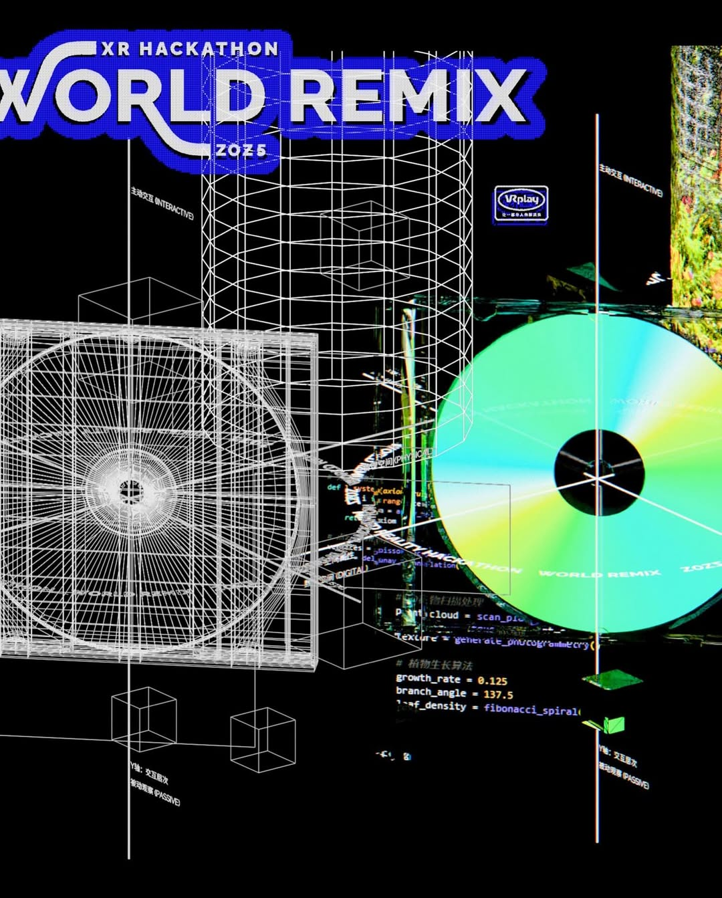

<!doctype html>
<html lang="zh-CN">
<head>
<meta charset="UTF-8">
<meta name="viewport" content="width=device-width, initial-scale=1.0">
<title>箱中温室 — 档案查看器 V2</title>
<style>
:root{--bg:#0a0d10;--panel:#12171d;--panel-2:#0f1318;--line:#232a33;--text:#eef3f7;--muted:#9ea8b6;--accent:#7ab7ff;--accent2:#6cf074}
*{box-sizing:border-box} body{margin:0;font-family:Inter,system-ui,-apple-system,BlinkMacSystemFont,"Segoe UI",Roboto,"Helvetica Neue",Arial,"Noto Sans SC",sans-serif;background:var(--bg);color:var(--text)}
a{color:var(--accent);text-decoration:none} img{max-width:100%;display:block}
.app{display:grid;grid-template-columns:300px minmax(0,1fr) 300px;min-height:100vh}.sidebar,.related{border-right:1px solid var(--line);background:var(--panel-2);padding:18px}.related{border-right:none;border-left:1px solid var(--line)}.detail{padding:22px 28px 40px}
.title{font-size:12px;letter-spacing:.16em;text-transform:uppercase;color:var(--muted);margin-bottom:12px}.system-card{padding:14px;border:1px solid var(--line);background:var(--panel);margin-bottom:14px}.search{width:100%;padding:12px;border:1px solid var(--line);background:#0b1014;color:var(--text);outline:none;margin-bottom:16px}
.group{margin-bottom:18px}.group h3{font-size:12px;text-transform:uppercase;letter-spacing:.16em;color:var(--muted);margin:0 0 8px}.entry{padding:10px 11px;border:1px solid var(--line);margin-bottom:8px;background:var(--panel);cursor:pointer}.entry.active{border-color:var(--accent);box-shadow:inset 0 0 0 1px var(--accent)}.entry strong{display:block;font-size:14px}.entry small{display:block;color:var(--muted);margin-top:3px;font-size:12px}
.topbar{display:flex;justify-content:space-between;gap:14px;align-items:flex-start;border-bottom:1px solid var(--line);padding-bottom:18px;margin-bottom:22px}.headline h1{margin:0;font-size:42px;line-height:.96;letter-spacing:-.04em}.headline .sub{color:var(--muted);margin-top:8px;font-size:15px}.meta{display:grid;grid-template-columns:repeat(4,1fr);gap:12px;margin:18px 0 24px}.meta .box{border:1px solid var(--line);background:var(--panel);padding:12px}.meta .label{font-size:11px;text-transform:uppercase;letter-spacing:.14em;color:var(--muted);margin-bottom:8px}.lead{font-size:18px;line-height:1.7;color:#dde6ee;max-width:960px}.grid{display:grid;grid-template-columns:1.15fr .85fr;gap:18px;margin-top:24px}.panel{border:1px solid var(--line);background:var(--panel);padding:16px}.panel h2{margin:0 0 12px;font-size:18px;letter-spacing:-.02em}.panel p{margin:0 0 12px;line-height:1.7}.relblock{border-top:1px solid var(--line);padding-top:12px;margin-top:12px}
.tag{display:inline-block;padding:6px 9px;border:1px solid var(--line);margin:0 6px 6px 0;font-size:12px;color:var(--muted)}.fake-ui{border:1px solid var(--line);background:#0c1116;padding:14px;display:grid;gap:12px}.fake-ui .bar{display:flex;justify-content:space-between;align-items:center;border-bottom:1px solid var(--line);padding-bottom:10px}.fake-ui .logo{font-weight:800;letter-spacing:.06em}.fake-ui .hero{height:120px;background:linear-gradient(135deg,rgba(122,183,255,.14),rgba(108,240,116,.14));border:1px solid var(--line);display:flex;align-items:flex-end;padding:12px;font-size:14px}.fake-ui .tiles{display:grid;grid-template-columns:1fr 1fr;gap:10px}.fake-ui .tile{border:1px solid var(--line);padding:10px;min-height:72px;background:rgba(255,255,255,.02)}
.related h2{font-size:12px;text-transform:uppercase;letter-spacing:.16em;color:var(--muted);margin:0 0 10px}.related-card{border:1px solid var(--line);padding:12px;background:var(--panel);margin-bottom:10px}.related-card strong{display:block;margin-bottom:4px}.thumb{width:100%;border:1px solid var(--line);margin:14px 0 8px}.code{font-family:ui-monospace,SFMono-Regular,Menlo,Monaco,Consolas,"Liberation Mono","Courier New",monospace;color:#bcd1ff;font-size:13px;line-height:1.65;white-space:pre-wrap}.footer{font-size:12px;color:var(--muted);margin-top:22px;padding-top:12px;border-top:1px solid var(--line)}
@media (max-width:1200px){.app{grid-template-columns:280px 1fr}.related{display:none}.meta{grid-template-columns:repeat(2,1fr)}.grid{grid-template-columns:1fr}}
</style>
</head>
<body>
<div class="app">
<aside class="sidebar">
  <div class="title">Archive / Codex V2</div>
  <div class="system-card"><strong>箱中温室</strong><div style="color:var(--muted);font-size:14px;">Greenhouse in Transit / Mistgarden Case</div></div>
  <input id="search" class="search" placeholder="搜索词条 / Search entries">
  <div id="groups"></div>
</aside>
<main class="detail"><div id="detail"></div></main>
<aside class="related">
  <h2>相关项 / Related</h2>
  <div id="related"></div>
  
  <div class="code">SYSTEM NOTES
- public shell: SONGJIAN
- holding house: White Isle House
- route network: TIDELINE
- anomaly office: Relay Bureau
- object class: Mistgarden Case MG-17
- public title: Greenhouse in Transit</div>
  <div class="footer">本页用于后续词条、伪官网、失物系统和 ARG 页面扩展。</div>
</aside>
</div>
<script>
const db = [
  {id:'virtura', group:'系统概览', title:'VIRTURA 数字航行宇宙', en:'VIRTURA Digital Voyage Universe', type:'世界观总纲', status:'半公开', parent:'—', summary:'一个由数字洋流、目的地节点、便携空间舱、错投机制与现实侵入事件共同构成的开放宇宙。', body:['在这套世界里，空间不是固定背景，而是可以被封存、运输、复制和重新认领的对象。','赛尼亚岛是一个面向公众开放的停靠节点；而《箱中温室》则是一件让这个世界以失物形式侵入现实的异常证物。'], related:['songjian','senja','mistgarden']},
  {id:'current', group:'系统概览', title:'数字洋流', en:'Digital Current', type:'底层媒介', status:'内部', parent:'VIRTURA', summary:'旅客、记忆、舱体与目的地之间发生迁移的底层流动媒介。', body:['数字洋流不是一个机构，而是一种更接近“海流 + 网络 + 空间缓冲层”的存在。','潮线依附其上运行，转栈署则处理其中出现的异常错投。'], related:['tideline','relay','mistgarden']},
  {id:'tideline', group:'机构档案', title:'潮线', en:'TIDELINE', type:'航行与运输网络', status:'公开 / 半深层', parent:'数字洋流', summary:'负责旅客接驳、目的地通行、便携舱体运输与路线维护的航行网络。', body:['它在世界观中的位置更像一条被品牌化的航运系统，而不是充满 lore 的神秘机关。','对于观众来说，潮线最常以票据、通行信息、节点时间和运输记录的形式出现。'], related:['ticket','senja','mistgarden']},
  {id:'relay', group:'机构档案', title:'转栈署', en:'Relay Bureau', type:'异常与回收机构', status:'内部', parent:'—', summary:'处理错投物、未完成中转、失物登记、回收记录与异常警示的系统部门。', body:['转栈署是这套世界里最适合留下文件痕迹的机构。','在 ARG 层面，它可以通过认领通知、回收警示、状态更新和失败记录慢慢暴露自身存在。'], related:['mistgarden','ticket','passenger']},
  {id:'whiteisle', group:'机构档案', title:'白屿会', en:'White Isle House', type:'持有与策划母体', status:'半公开', parent:'—', summary:'赛尼亚岛及其相关目的地系统背后的持有、策划与长期维护母体。', body:['它比“集团”更像一个安静但权力稳定的背景实体：既持有目的地，也决定空间风格和长期策略。','公众不会频繁直接接触它，但在正式页面、白皮书、合作物料和岛屿背景里，它是不可忽视的名字。'], related:['songjian','senja','fakeportal']},
  {id:'songjian', group:'机构档案', title:'松间', en:'SONGJIAN', type:'公众旅居品牌', status:'公开', parent:'白屿会', summary:'赛尼亚岛数字旅居地对外的品牌名称，负责风格、地图、空间说明与旅居叙述。', body:['“松间”只保留为一个单名品牌，不再附加“目的地”“集团”等功能性后缀。','它更像一套能被感知、停留、带走记忆的旅居语气，而不是单纯运营口径。'], related:['senja','whiteisle','fakeportal']},
  {id:'senja', group:'地点档案', title:'赛尼亚岛数字旅居地', en:'Senja Digital Retreat', type:'目的地节点', status:'公开', parent:'松间', summary:'模拟挪威峡湾景观的虚拟北欧岛屿，是公众最先进入的表层入口。', body:['Minecraft 版本让公众以玩家身份进入地图；而更深层的网页与头显体验则让岛屿开始承担世界观驻泊地的角色。','赛尼亚岛不只是目的地，它也是旅客停靠、记忆缓冲、物件归还和空间暂存的节点。'], related:['greenhousemodule','mistgarden','ticket']},
  {id:'greenhousemodule', group:'地点档案', title:'温室模块', en:'Greenhouse Module', type:'受限空间 / 待补强', status:'半公开', parent:'赛尼亚岛数字旅居地', summary:'位于赛尼亚岛内部的植物保育与环境缓冲结构，是雾庭舱最可能的原生归属地之一。', body:['这一词条是本轮建议新增的关键补强点。','一旦温室模块存在，雾庭舱就不再像凭空掉出来的独立装置，而像来自岛屿内部体系的一件真实设备。'], related:['senja','mistgarden','passenger']},
  {id:'mistgarden', group:'物件档案', title:'雾庭舱', en:'Mistgarden Case', type:'便携温室舱 / MG-17', status:'未认领', parent:'赛尼亚岛宇宙', summary:'项目内部真正的物件名。它是一只便携温室舱，而不是普通行李箱。', body:['对外，项目仍然叫《箱中温室》；对内，这件物就是雾庭舱 MG-17 Portable Conservatory Unit。','它原本属于一位长期驻留旅客，用于保存植物影像、湿度记忆、局部参数和个人化的停留环境；因错投进入现实。'], related:['projecttitle','passenger','ticket','climate','utility']},
  {id:'projecttitle', group:'物件档案', title:'箱中温室', en:'Greenhouse in Transit', type:'项目题名', status:'公开', parent:'雾庭舱', summary:'面向公众与策展语境的题名。保留诗性，但不承担装备级识别任务。', body:['这个名字负责把观众吸引到“箱子里真的装着一座温室”这件事上。','装备级识别由“雾庭舱”补足，二者共同构成项目的双层命名。'], related:['mistgarden']},
  {id:'passenger', group:'乘客档案', title:'未公开旅客', en:'Unlisted Long-Stay Passenger', type:'人物 / 待展开', status:'机密', parent:'赛尼亚岛长期驻留记录', summary:'雾庭舱原持有者，一位长期驻留于赛尼亚岛的研究型旅客。', body:['其活动痕迹更接近“在北方停留太久的人”，而非宏大英雄角色。','他在现实中的植物园、温室和北方旅行中积累了影像与环境记忆，并把它们整理成一个便携舱体。'], related:['mistgarden','ticket','utility']},
  {id:'ticket', group:'物件档案', title:'旅客票据', en:'Voyage Ticket', type:'纸质接口', status:'公开 / 可复制', parent:'雾庭舱', summary:'最适合被观众带走的现实入口物之一。', body:['票据承担多重作用：旅居感、航行感、现实触感、扫码入口和 ARG 延迟体验。','在系统里，它既可能是潮线的票据，也可能带有转栈署的补记与异常编号。'], related:['tideline','relay','mistgarden']},
  {id:'utility', group:'物件档案', title:'驻留洗漱套件', en:'Stay Utility Kit', type:'生活层小物', status:'公开 / 待制作', parent:'雾庭舱', summary:'包括拖鞋、牙刷、洗漱袋等旅居小物，用于强化“这是某人真实住过、停留过的系统”这一感觉。', body:['它不是装饰性的 props，而是把世界观从“只剩技术和设定”拉回“有人真的住过这里”的生活层。','建议作为现场可见小物出现，并和扫码流程中的提问、票据和气味卡形成互文。'], related:['mistgarden','passenger','scent']},
  {id:'climate', group:'物件档案', title:'环境参数卡', en:'Climate Card', type:'技术性附属物', status:'待制作', parent:'雾庭舱', summary:'记录雾庭舱内局部湿度、温度、光照与植物记忆校准信息的参数卡。', body:['它能提供一点“系统真实感”，但不需要写得过满。','参数卡最好像真实设备随附的校准记录，而不是一张解释世界观的概念海报。'], related:['mistgarden','scent','greenhousemodule']},
  {id:'scent', group:'物件档案', title:'气味卡', en:'Scent Card', type:'感知附属物', status:'待制作', parent:'雾庭舱', summary:'把气味正式纳入体验链路，而不是附会性的装饰。', body:['建议拆成三层：旅居清洁感、温室湿度感、轻微异常冷空气感。','气味卡既可以是现场带走物，也可以在手机端被写入识别问题。'], related:['utility','climate','mistgarden']},
  {id:'misdelivery', group:'事件档案', title:'错投事件', en:'Misdelivery Event', type:'异常事件', status:'未结案', parent:'转栈署', summary:'雾庭舱没有按预定路径返回赛尼亚岛，而是在复制或中转过程中掉入现实。', body:['这是整个项目最核心的异常事件，也是连接现实箱体、网页档案和 Vision Pro 体验的关键桥梁。','在对外语境中，它可以保持含糊；在档案查看器中，则可以逐步补上时间、地点和未确认部分。'], related:['relay','mistgarden','passenger']},
  {id:'fakeportal', group:'媒介入口', title:'模拟官网层', en:'Simulated Brand Web Layer', type:'伪网页层', status:'开发中', parent:'档案查看器', summary:'在档案查看器内部模拟“松间 / 白屿会”的公开网页。', body:['这一层是后续最值得做的补强点之一。','它的任务不是把信息堆满，而是先制造相信感，让观众以为自己真的进入了一个旅居品牌和持有方的公开系统，然后慢慢看见异常。'], related:['songjian','whiteisle','archive']},
  {id:'archive', group:'媒介入口', title:'档案查看器', en:'Archive Viewer', type:'数据库阅读器', status:'原型', parent:'网站 B', summary:'承接深层设定、组织结构、物件、事件与假官网层的入口。', body:['它更像游戏 codex 和内部数据库，不像传统展示网页。','后续所有词条、认领流程、失物记录和手机端深链都应汇入这里。'], related:['fakeportal','relay','mistgarden']}
];

const groups=[...new Set(db.map(x=>x.group))];
const groupsWrap=document.getElementById('groups');
const detail=document.getElementById('detail');
const related=document.getElementById('related');
const search=document.getElementById('search');
let currentId='mistgarden';
function renderList(filter=''){groupsWrap.innerHTML='';groups.forEach(group=>{const items=db.filter(x=>x.group===group&&(x.title+x.en+x.summary).toLowerCase().includes(filter.toLowerCase()));if(!items.length)return;const div=document.createElement('div');div.className='group';div.innerHTML=`<h3>${group}</h3>`;items.forEach(item=>{const el=document.createElement('div');el.className='entry'+(item.id===currentId?' active':'');el.innerHTML=`<strong>${item.title}</strong><small>${item.en}</small>`;el.onclick=()=>{currentId=item.id;renderList(search.value);renderDetail();};div.appendChild(el)});groupsWrap.appendChild(div)})}
function renderDetail(){const item=db.find(x=>x.id===currentId);detail.innerHTML=`<div class="topbar"><div class="headline"><h1>${item.title}</h1><div class="sub">${item.en}</div></div><div><a href="project-home-v2.html">返回项目主页</a></div></div><div class="meta"><div class="box"><div class="label">类型</div>${item.type}</div><div class="box"><div class="label">状态</div>${item.status}</div><div class="box"><div class="label">上级</div>${item.parent}</div><div class="box"><div class="label">摘要</div>${item.summary}</div></div><div class="lead">${item.summary}</div><div class="grid"><div class="panel"><h2>详细说明</h2>${item.body.map(p=>`<p>${p}</p>`).join('')}<div class="relblock"><h2>关联词条</h2>${item.related.map(id=>{const r=db.find(x=>x.id===id);return r?`<span class="tag">${r.title}</span>`:''}).join('')}</div></div><div class="panel"><h2>模拟界面 / Suggested Surface</h2><div class="fake-ui"><div class="bar"><div class="logo">${item.id==='songjian'?'SONGJIAN':item.id==='whiteisle'?'WHITE ISLE HOUSE':item.id==='tideline'?'TIDELINE':item.id==='relay'?'RELAY BUREAU':'ARCHIVE LAYER'}</div><div style="color:var(--muted);font-size:12px;">PUBLIC / PARTIAL</div></div><div class="hero">${item.title} — ${item.en}</div><div class="tiles"><div class="tile">表层说明<br><span style="color:var(--muted)">这层文字更适合对外公开。</span></div><div class="tile">深层注释<br><span style="color:var(--muted)">可在后续版本中插入异常警示或错投编号。</span></div><div class="tile">关联物件<br><span style="color:var(--muted)">票据、参数卡、洗漱套件、气味卡。</span></div><div class="tile">后续扩展<br><span style="color:var(--muted)">假官网层 / 手机流程 / ARG 深链。</span></div></div></div></div></div>`;related.innerHTML=item.related.map(id=>{const r=db.find(x=>x.id===id);if(!r)return '';return `<div class="related-card"><strong>${r.title}</strong><div style="color:var(--muted);font-size:13px;">${r.type}</div><div style="margin-top:6px;">${r.summary}</div></div>`}).join('')}
search.addEventListener('input',e=>renderList(e.target.value));renderList();renderDetail();
</script>
</body>
</html>